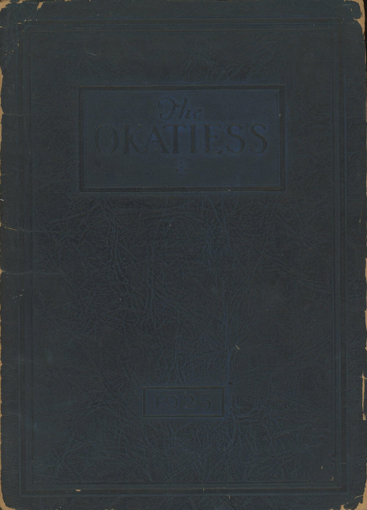

The Okatiess, 1925
1925 · Oberlin Kindergarten-Primary Training School；书影：Common Crow Books
公开封面可辨The Okatiess与1925。书商货号0083921称全书84页并有签名题赠，但未展示学生名单或肖像内页。The public cover shows The Okatiess and 1925. Common Crow Books item 0083921 describes an 84-page copy with inscriptions; no student or portrait pages are displayed.

封面可确认年鉴题名与年份；页数、签名情况来自书商描述，未逐页核验。该图不是侯涵辉肖像，不能确认她入学或毕业。The title and year are visible on the cover. Pagination and inscriptions are described by the dealer and have not been checked against the interior. This is not a portrait or enrollment record of Hou.
同校校目书影及年鉴馆藏位置School catalogue photographs and yearbook holdings